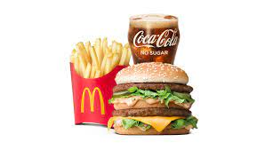
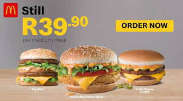
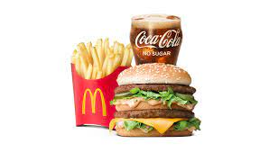
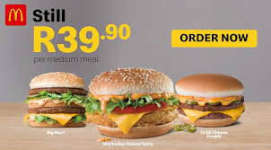

MCDONALD'S
Mcdonalds Crew Members deliver orders in Mcdonalds fast-food restaurants. Specific duties highlighted on a resume sample for Mcdonalds Crew Member include greeting customers, recommending food items, collecting payments, promoting special deals, operating various tools and equipment to prepare food, maintaining cleanliness, and ensuring quality control. Based on our collection of example resumes, the most sought-after skills in a Mcdonalds employee are customer focus, effective communication, good interpersonal skills, stamina, problem-solving orientation, and knowledge of hygiene standards. No formal education is required for this position.